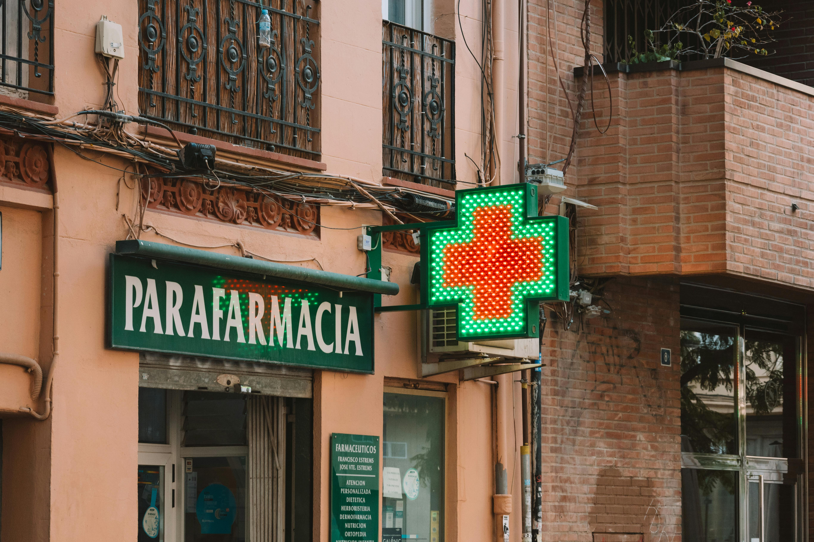

GoodHealth Pharmacy
Come to us and we will provide you good health
Kicukiro on main street
WELCOME TO GOODHEALTH PHARMACY

We provide high-quality medications and healthcare products to our community.
Our pharmacy is dedicated to helping you mantain good health with professional advice and reliable service.
Visit us for all your medical needs,including prescription medicines,over-the-counter drugs,vitamins,supplements, and personal care items.
OUR PHARMACY SERVICES
Prescription filling
Fast and good prescription services with proper dosage instructions and medication counseling
Health Constructions
Professional advice from our experienced pharmacists about your medications and health concerns.
Health Screenings
Blood pressure monitoring,blood sugar testing, and basic health checkups available daily.
Products we offer
Prescription Drugs
All major prescription medications for chronic and acute conditions.
Vitamins and supplements
Multivitamins,minerals,herbal,supplements, and nutritional support products
Personal Care
Skincare,hair care,oral hygiene,and bathproducts for daily wellness
Baby formulas,diapers,lotions,and healthcare items for infants
Medical Equipmen
Blood pressure monitor,glucose meters,thermometers,and mobility aids
Health Tips and information
Take medications on time
Set reminders for your daily medications to mantain consistent treatement and better health outcomes
Store Medicines properly
Keep medications in a cool, dry place away from sunlight.Check expiration dates regularly
Know Your Allergies
Always inform your pharmacist about any drug allergies before taking new medications
Read Medication Labels
Carefully read dosage instructions and warnings on all prescription and OTC medicines
Mantain Health Records
Keep a list of all your current medications and share it with your healthcare providers
About GoodHealth Pharmacy
GoodHealth Pharmacy was established in 2010 with a mission to provide accessible,affordable,and quality health care to our local community.
we are a family-owned pharmacy that values personal relations with our customers.
Our team consists of linced pharmacists and trained pharmacy technicians who are passionate about helping people live healthier lives.We take time to understand your health needs and provide personalized recommendations.
We stock a complete range of pharmaceuticals products from trusted manufactures.Quality and safety are our top personalities in every products we sell
Store Operating Hours
Monday - Friday
8:00 AM - 9:00 PM
Saturday
9:00 AM - 8:00PM
Sunday
10:00 AM - 6:00 PM
Public Holidays
10:00AM - 4:00PM
Insurance and Payment
We accept most major insurance plans including medicare,medicaid, and private health insurance providers.Our staff can help
you verify your insurance coverage and process claims efficiently.
Payment methods accepted: Cash,Credit cards,debit cards,and health savings accountants
Our Pharmacy Team
Dr.Sarah Johnson
Chief Pharmacist with over 15 years of experience in clinical pharmacy and patient care.
Dr.Michael Chen
Clinical Pharmacy Specialist focusing on chronic disease management and medication therapy
David Brown
Inventory Manager ensuring all medications are in stock and properly stored.
Special Offers and Discounts
Senior Citizen Discount
20 percent dicount on all medications for customers aged 60 and above every wednesday
First Time Customer
Get 21 percent off on your first purchase when you sign up for our health card.
Monthly Specials
Check our in-store displays for monthly discounts on vitamins and supplements
Common Medicines Available
Pain Relief
Paracetamol,Ibuprofen,Aspirin,and other pain management medicines.
Cold and flu
Decongestaants,enough syrups, throat lozenges, and fever reducers
Allergy Medicines
Anthihistamines,nasal sprays,and eye drops for allergy relief.
Digestive Health
Antiacids , laxatives,anti-diarrhea medications, and digestive enzymes.
Skin Care
Antifungal creams, antibiotic ointments, and eczema treatments.
Heart Health
Blood pressure medicines,cholesterol medications,and blood thinners.
Health Resources
Medications Guides
Free printed guides about how to take your medicines safely and correctly
Wellness Newsletter
Monthly newsletter with health tips , new products, and pharmacy news.
Vaccination Records
We help you track your vaccination history and remind you of due dates.
Medicine Disposal
Safe disposal service for expired or unused medications at our pharmacy
Why Choose GoodHealth Pharmacy
Personalized services
We take time to know your health needs and provide tailored recommendations.
Quality Assurance
All our products come from verified and trusted pharmaceuticals companies
Competitive Prices
We offer affordable prices with out compromising on quality or safety.
Convenient Location
Easily accessible location with ample parking and extended operating hours
Experienced Staff
Our team is trained to answer your questions and address your concerns.
Community Focused
We actively participate in local health awareness programs and events.
Pharmacy Safety Practices
Temperature Controlled Storage
All temperature-sensitive medicines are stored in monitored refrigerators with backup power
Strict Quality Checks
Every batch of medicine undergoes verification before reaching our shelves
Secure Prescription Handling
We maintain complete confidentiality of your medical information and prescription records.
Customer Testimonials
Maria Gonzalez
The staff at GoodHealth pharmacy is always friendly and helpful.
They explain my medications clearly and answer all my questions with patience
James Wilson
I have been using their delivery service for my monthly prescriptions.
It is reliable and they never miss a delivery date
Patricia
Their prices are very reasonable and they help me find generic alternatives to save money on my medications.
Kalisa
The health screenings they offer are convenient and the pharmacist takes time to explain the results thoroughly.
Seasonal Health Advice
Winter wellness
Get your flu shot early,boost vitamin D intake, and stay warm to prevent seasonal illnesses.
Summer Safety
Stay hydrated,use sunscree,and keep your medications away from extreme heat during summer months
Allergy season
Start taking allergy medicines before pollen season begins for best protection against symptoms
Cold and flu season
Wash hands frequently, get adequete sleep,and keep a well-stocked medicine cabinet at home
Medicine Information Center
Understanding Generic medicines
Generic medicines contain the same active ingredients as brand-name drugs but are more affordable.they work the same way in your body.
Medicine Interactions
Always tell your pharmacist about all medicines you take,including herbal supplements,to avoid harmful interactions.
Proper Dosage Instructions
Never change your medication dosage without consulting your doctor or pharmacist first.
Side Effects Awareness
Learn about possible side effects of your medications and know when to contact your healthcare provider
Medicine Expiration Dates
Using expired medicines can be dangerous. Always check dates and dispose of old medicines properly.
Traveling with medicines
Keep medicines in original containers and carry enough supply for your entire trip plus a few extra days
Community Outreach Programs
Free Blood pressure Camps
We organize free blood pressure checkup camps every first satarday of the month at our pharmacy.
School Health Talks
Our pharmacists visit local schools to teach children about medicine safety and health habits.
Senior Wellness Programs
Special sessions for senior citizens focusing on medication management and fall prevention.
Medicine Donation Drives
We collect unused unexpired medicines and donate them to free clinics and charitable organization
Health Awareness Workshops
Free workshops on topics like diabetes management,heart health , and nutrition planning
Support Groups
We host monthly support group meetings for patients with chronic conditions like diabetes and hypertension
Frequently Asked Questions
Do I need a prescription for all medicines?
Some medicines require a prescription from a doctor.Others are available over the counter.Our pharmacists can guide you.
How can I refill my prescription?
You can call us,visit our store,or use our prescription refill request form.We will prepare your medicines quickly.